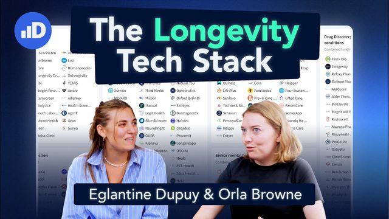
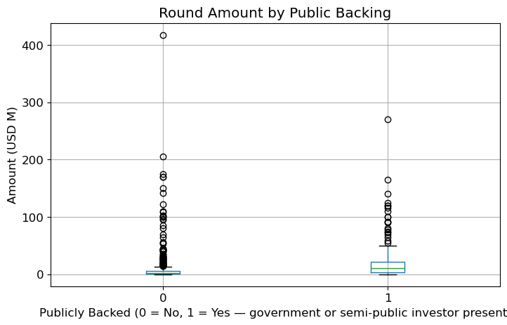

About
I’m pursuing a Master of Management in Analytics (MMA) at McGill’s Desautels Faculty of Management, expected to graduate in Summer 2027.
My goal is to build a career in venture capital or adjacent organizations, helping make capital allocation more data-driven, rigorous and inclusive. The MMA is where I’m building the technical foundation for that: Python, R and SQL, advanced statistics, and coursework spanning valuation analytics, text analytics and AI, capped by a hands-on capstone project with live datasets and industry clients.
I bring 2.5 years inside the VC data ecosystem at Dealroom.co, plus an undergraduate thesis researching gender bias in startup funding. Both convinced me that better data models can meaningfully close those gaps.
French national. Will hold a valid Canadian Post-Graduation Work Permit (PGWP) upon graduation.
Contact
Languages
- French (Native)
- English (Fluent)
- Spanish (Proficient)
Outside work
- Running
- Hiking
- Tennis
- Swimming
- Fitness
- DJ
- Photography
- Volunteering at soup kitchens
Experience
-
Solutions Architect · OriginElle In progress
- 8-month capstone with a globally renowned fertility clinic: architecting a secure, unified data infrastructure on Azure that links previously siloed lab, nursing and clinical records.
- Designing the framework for exploratory and clustering-based patient analytics on historical IVF/IUI data.
- Selecting the tool stack (Python, SQL, Power BI) for a prototype lab-quality dashboard tracking core oocyte and embryo KPIs.
-
Research Associate · Dealroom.co
Graduate Program → Innovation Analyst → Research Associate
- Produced over 20 market-intelligence reports and presented at more than five industry conferences; each report reached 2k+ online viewers, backed by a 40k+ LinkedIn audience.
- Authored a Blue Economy deep dive referenced at the UN World Ocean Conference and by the World Economic Forum.
- Ran reports end to end, from selling and sector taxonomy to data validation, analysis in BigQuery SQL and visualization in Datawrapper.
- Collaborated with Bpifrance, France’s leading public investment bank, to assess the State of Deep Tech in France.
- Produced the most comprehensive industry report to date on Longevity for Speedinvest (European VC) and Generali (global insurer), and shared the insights on Dealroom’s podcast.
- Focus areas: Climate Tech (green mobility, sustainable food & AgriTech), Deep Tech (robotics, AI) and Health (biotech, digital health).
- Managed client communication, created social media assets, and presented findings in person and online.
- Tools: BigQuery SQL, Excel (financial modeling), Datawrapper, ChatGPT and OpenAI integrations.
Podcasts & article
-

Podcast · DealroomThe Longevity Tech Stack - startups, funding and trends
Invited onto Dealroom's Podcast to discuss the findings of the Longevity & Healthy Ageing report I authored.
Watch on YouTube: The Longevity Tech Stack - startups, funding and trends -
Podcast · NewWave
The State of European Climate Tech
Invited onto the NewWave Podcast to discuss the findings of The State of European Climate Tech which I authored.
Listen on Spotify: The State of European Climate Tech -
Article · Dealroom.co
Oil Spills: Innovative cleanup methods
Article I authored investigating technological solutions to prevent and mitigate the impacts of Oil Spills.
Read on Dealroom.co: Oil Spills: Innovative cleanup methods
Selected research 9 reports · 28 slides
Collection of slides from the reports I authored displaying my sector knowledge and quantitative analytical skills. Main sectors: Climate Tech, HealthTech & BioTech, Deep Tech amongst others.
-
Jr. Business Developer · D2X Group
- Joined at a very early stage; the startup has since become the first regulated trading platform for institutional investors in crypto derivatives.
- Researched new revenue opportunities, strategic partnerships and key industry developments for the CEO; insights were regularly reported to the board of investors, executive committee and financial regulators.
Projects
-

Predicting Quebec Startup Funding Round Size
What predicts how much a Quebec startup raises in a single round?
Key result: Tuned Random Forest: test RMSE $19.3M on 621 disclosed rounds; growth stage beats public backing as a predictor
-

Causal Inference on Startup Failures
Does raising more money actually make a failing startup last longer?
Key result: High funding adds about +2.2 years of lifespan (95% CI 1.6–2.8); losing to tech giants shows no detectable effect

Education & Skills
-
Master of Management in Analytics (MMA) · McGill University In progress
-
Bachelor in Business Administration · IE University
-
Exchange Semester · McGill University
-
International Baccalaureate · International School of Brussels
Technical skills
- Python
- RStudio
- SQL (BigQuery & MySQL)
- Databricks
- Confluent
- Looker Studio
- Excel
- Datawrapper
- LLM tools
- NLP
- Multiple linear regression
- Causal inference
- Random forest
- Microsoft Azure Cloud & Solutions Architect
- dbt Fundamentals
- Anthropic AI Fluency
- Jira
- Power BI
- Power Query
- Snowflake
- AWS